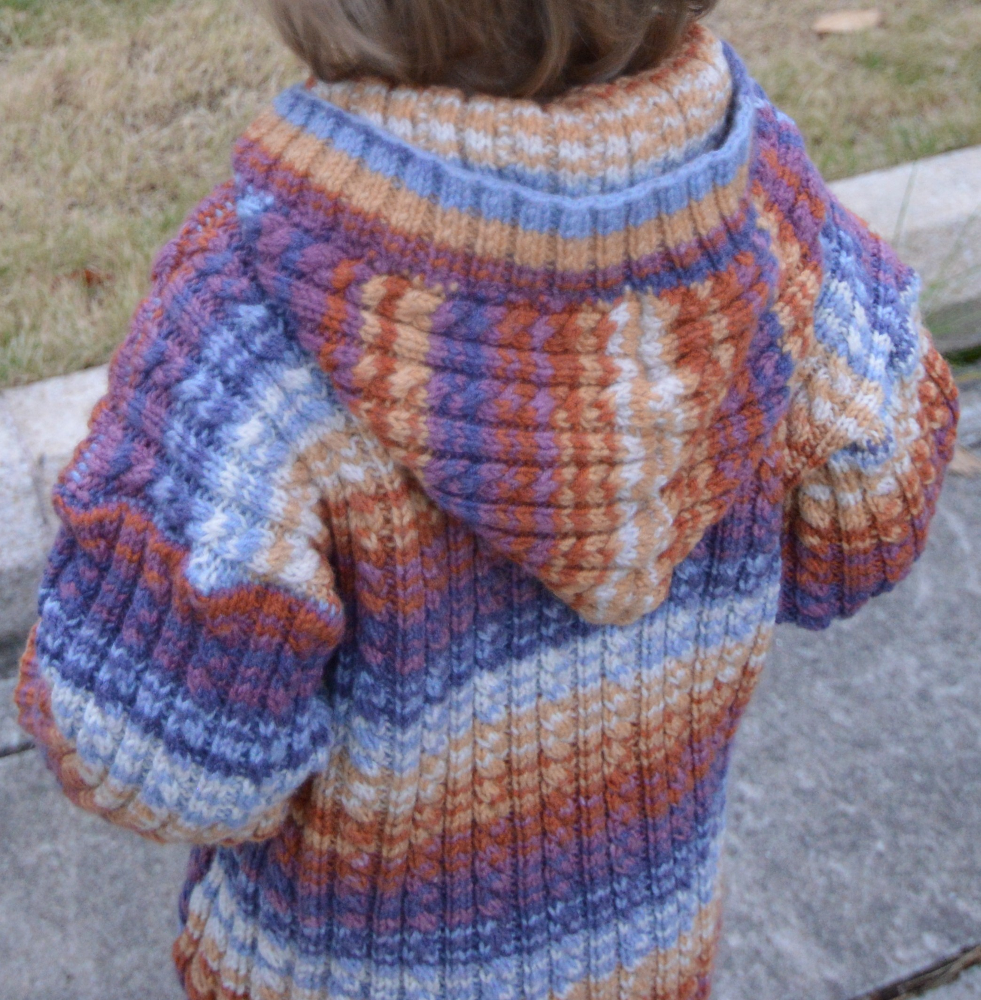

Пальто
Возраст: от 3 месяцев до 1,5 года
Размеры: 62-68 (74-80) 86-92
Вам потребуется:
- 300 (350) 450 г голубой пряжи Baby Cashmerino (55% мериносовой шерсти, 33% микроволокна, 12% кашемира, 125 м/50г)
- прямые спицы № 2,5 и 3,5
- длинные круговые спицы № 2,5
- 7 пуговиц
Узоры:
Резинка: попеременно 2 лиц., 2 изн.
Узор из кос: вязать по схеме, на которой приведены только лиц. р., в изн. р. петли вязать по рисунку. Повторять петли раппорта и с 1-го по 4-й р.
Плотность вязания, узор из кос: 34 п. и 34 р. = 10 x 10 см.
Описание
Спинка
На спицы № 2,5 набрать 82 (90) 98 п. и связать 2,5 см резинкой, при этом в последнем р. равномерно прибавить 18 (22) 22 п. Перейти на спицы № 3,5 и вязать узором из кос, начиная от стрелки А (В) А. Через 20,5 (22,5) 25,5 см от резинки закрыть для пройм с обеих сторон 3 п. Через 33,5 (37,5) 42,5 см от резинки закрыть для скосов плеча с обеих сторон 15 (17) 18 п. и во 2-м р. 1 х 15 (17) 18 п. Через 34,5 (38,5) 43,5 см от резинки закрыть оставшиеся п.
Правая полочка
На спицы № 2,5 набрать 38 (42) 46 п. и связать 2,5 см резинкой, при этом в последнем р. равномерно прибавить 9 (11) 11 п. Перейти на спицы № 3,5 и вязать узором из кос, начиная от стрелки D. Через 12,5 (14,5) 16,5 см от резинки отложить с правой стороны 11 п., с левой стороны отложить 4 (10) 14 п. и на оставшихся 32 п. связать для планки кармана 2 см резинкой. Петли закрыть.
Для мешковины кармана набрать 32 п. и вязать по узору внешних 22 32 п. кармана полочки. Через 12,5 (14,5) 16,5 см от наборного края петли отложить, перевести на спицу отложенные 11 п. правой стороны, 32 п. мешковины кармана, отложенные 4 (10) 14 п. левой стороны и вязать на всех петлях узором из кос. Выполнить с левой стороны пройму и скос плеча, как на спинке. На высоте спинки отложить оставшиеся п.
Левая полочка
Вязать симметрично.
Рукава
На спицы № 2,5 набрать 42 (50) 58 п. и связать 3,5 см резинкой, при этом в последнем р. равномерно прибавить 10 (10) 8 п. Перейти на спицы № 3,5 и вязать узором из кос, начиная от стрелки В (А) Е и для скосов рукава прибавить с обеих сторон в каждом 2-м р. 19 (22) 25 х 1 п. Через 11,5 (13,5) 15,5 см от резинки связать ещё 1 см и петли закрыть.
Капюшон
Выполнить плечевые швы. На круговые спицы перевести отложенные 14 (16) 18 п. правой полочки, дополнительно набрать 66 (72) 78 п., перевести отложенные 14 (16) 18 п. левой полочки = 94 (104) 114 п. и вязать узором из кос. На высоте капюшона 18 (20) 22 см петли закрыть.
Сборка
Выполнить верхний шов капюшона. Пришить нижний край капюшона к вырезу горловины спинки, при этом край капюшона слегка припосадить. Втачать рукава, выполнить боковые швы и швы рукавов.
На круговые спицы набрать по краям полочек и капюшона в общей сложности 292 (324) 356 п. и связать для планки 3 см резинкой, при этом через 1,5 см на правой планке равномерно выполнить 7 отверстий для пуговиц: провязать 2 п. вместе по узору и сделать 1 накид. Петли закрыть. Пришить пуговицы.
Источник
Результат


Comments
comments powered by Disqus